Slides and the HTML page
A scene made in the editor is meant to be shown, and a talk stops where the speaker says. The Slides mode puts pauses and comments on the scene’s time; Export ▸ HTML… turns the scene into a web page that plays it live and stops at each pause until you go on.
Here is one, embedded in this page with its own tags: what Export ▸ HTML… makes of First transform, as a talk, the scene of Your first transform with a pause after each of its first two steps, each with a note, and a comment where the answer arrives. The pictures of this page show the same project. Press Play: the scene stops at each pause. Then press Next, or click the scene and use → and ←; S shows the notes. The first pause skips its wait: after the first stop, going on starts the first transformation at once, with no rest before it.
The mode is for the end of the work, when the animation is done and you prepare to show it. It changes nothing of the scene: the Preview, the video and the animations of the exported Python are the same with it and without it. What it adds is read by the exports that can stop or carry words.
- A pause is an instant where the page stops until its reader goes on. It can carry a note: words for whoever presents.
- A comment is words for whoever works on the scene after the export, you or someone else, by hand or with a coding agent. The page shows it in its notes, the Python carries it as a comment, and the guide of the exported folder lists it as a task.
Turning the mode on
Choose View ▸ Slides, or press the button with a screen after Snap in the timeline’s toolbar (1 in the picture below). The button is drawn on, as Snap is, and the ruler is tinted. The mode has no key of its own.
The mode belongs to the project: it is saved with it, and turning it on or off is one undo step. It stays on while the project has a pause or a comment. Choosing it again then changes nothing, and a notice, Slides stays on, says how many marks are left: delete them first to turn it off.
The ruler by zone
With the mode on, the ruler shows where a mark may stand.
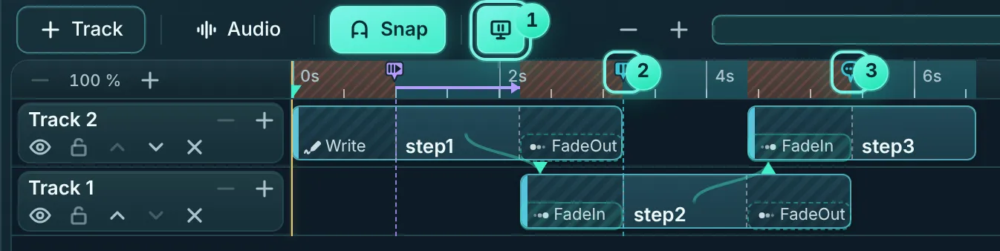
- Blue-green is where the scene rests: nothing animates there, and a pause or a comment may stand. The edges count: the instant an animation ends, or the one before the next starts, is where a pause is wanted most.
- Hatched red-orange is where something animates: an intro or an outro, an animation block, a relation, a camera move. Animations that overlap make one stretch.
- A thin notch of blue-green is an instant of rest with no length: between two animations that touch, or at the start or the end of a scene that begins or ends with an animation.
A red-orange zone takes no mark because a pause shows the scene at rest. A page stopped halfway through a transformation would show glyphs in flight, and the exported Python can only wait between two of its animations, not inside one. The zones are, in fact, the waits of the exported Python.
The zones follow every edit as it is made: drag a clip and they move before you let it go.
Adding a pause or a comment
Right-click the ruler where the scene rests. The menu offers Add pause here, with the time it will have, and Add comment here…. The time is the one clicked, put on a frame; with Snap on it is pulled onto the playhead or the edge of the zone when they are near. Where something animates, the two entries are greyed out and a line says what runs there. Under a line, wherever you open it, the menu holds four commands over every pause: adding one after every animation, skipping or keeping the wait at each, and deleting them all.
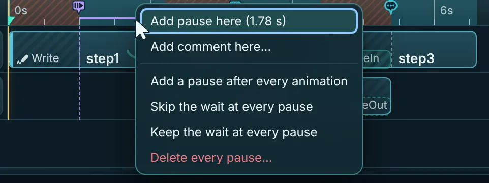
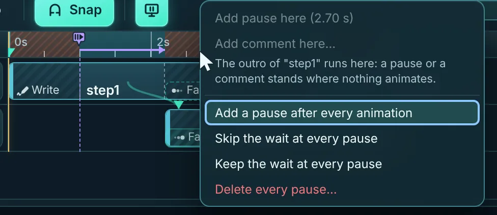
From the keyboard, put the playhead where the scene rests and press P for a pause or Shift+P for a comment; View ▸ Add pause at the playhead and View ▸ Add comment at the playhead… do the same. The keys work only while the mode is on and never in a text field. Where something animates, nothing is added and a notice says what runs then.
A pause is a small tag with «‖» in the upper part of the ruler, with a thin dashed line down the tracks; a comment is a speech bubble. The new mark has the keyboard’s focus.
A comment needs words, so Add comment here… asks for them first, in a dialog of several lines: Enter starts a new line and Ctrl+Enter gives the text. A comment without words cannot be added; Cancel adds nothing.
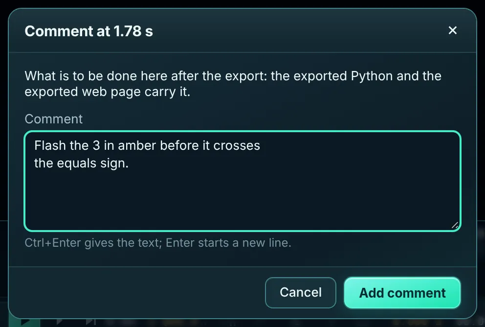
The scene stops at an instant once: a second pause on a frame that has one is not added, and the pause already there takes the focus. A pause and a comment may share an instant; the comment is read first.
A long scene: all the pauses at once
In a scene of many steps, choose Add a pause after every animation: the first entry under the line of the ruler’s right-click menu, wherever you open it, and an entry of the View menu. It adds a pause where each animation ends and another follows, at the start of each rest between two animations. The start of the scene, where nothing has happened yet, and the time after its last animation get none. A rest that holds a pause already gets no other, so you can run it again after more work on the scene.
All of them are one undo step, and a notice says how many were added (Added 4 pauses), or why none was (No pause to add). Then delete the ones you do not want: the first pause added has the focus, Delete removes it and the focus goes on to the next mark, and Tab skips one you keep.
Deleting every pause
Delete every pause… is the way back: the last entry of the ruler’s right-click menu, in red, and an entry of the View menu, greyed out while the project has no pause. Every pause goes at once, with its note; the comments stay.
It asks first. The question says how many pauses go and how many comments stay, and its red button names them (Hold to delete 4 pauses): hold it down for a moment, as for every deletion that asks; Cancel or Esc leaves everything as it was. Then it is one undo step: Ctrl+Z brings every pause back, and the notice says so (Deleted 4 pauses, and how many comments stay). The keyboard’s focus goes to the first comment left, or to the mode’s button in the toolbar when there is none.
Moving and editing a mark
Point at a mark and its words show at once under the ruler: what it is, when, and its text.
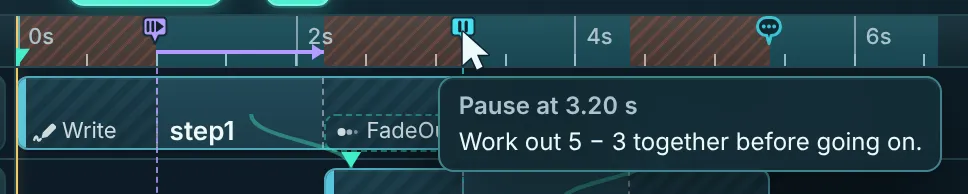
- A click puts the playhead on the mark.
- A drag moves it, on frames, inside the zone it stands in. It snaps as a new mark does; hold Shift to move it freely, and press Esc to cancel. A drag is one undo step.
- A double click writes its words, in the same dialog: a comment’s, which it cannot be without, or a pause’s note. Emptied, a note goes; a comment refuses to be emptied.
- A right-click opens its menu: Edit comment… for a comment, Add a note… or Edit note… for a pause, for a pause Skip the wait after it (below), and Delete.
From the keyboard
| Keys | What they do |
|---|---|
| P; Shift+P | Add a pause at the playhead; add a comment there, its words asked for first. |
| Tab | Reaches the marks of the ruler one by one, in the order of their times. |
| ← → | Move the focused mark a frame, inside its zone (↑ ↓ in Zen mode, where the timeline is vertical). |
| Delete, Backspace | Delete the focused mark; the focus goes on to the next one. |
| Enter | Write the focused mark’s words. |
| Shift+F10 | Open the focused mark’s menu (the Menu key does too). |
When an edit covers a mark
A mark keeps its instant when clips move: it belongs to no clip. So an edit can put an animation over it — a clip dragged, an intro made longer — or leave it past the end of a scene made shorter. The editor asks at once, when you let go of the drag or the change is made:
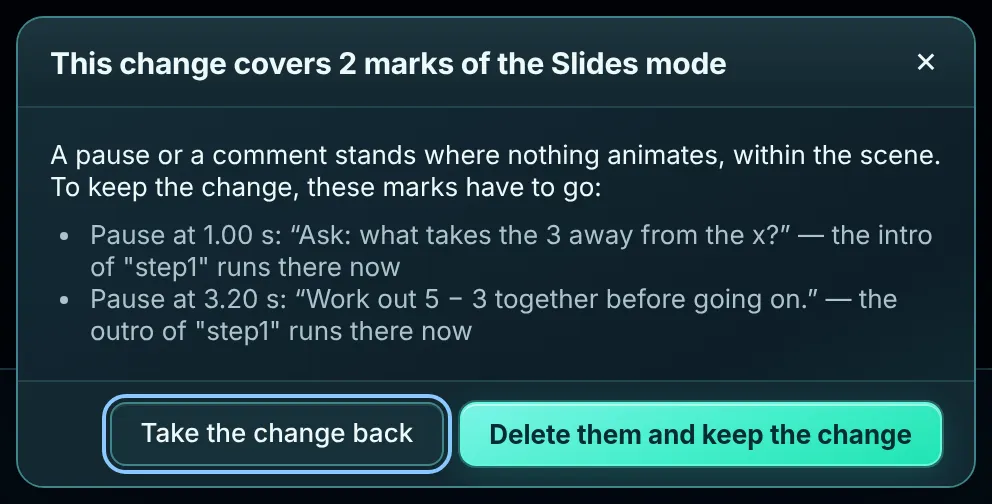
step1 dragged half a second later: its intro now runs over the first pause, its outro over the second.- Delete them and keep the change deletes the marks the change covered. The change and the deletion are one undo step: one Ctrl+Z brings back the clip where it was and the marks with it.
- Take the change back, or Esc, puts the project as it was before the change, with nothing left to redo.
An undo or a redo asks nothing. Nor does opening a file edited by hand with a mark under an animation or past the end: such a mark is drawn in amber, its tip says why, and you can drag it to where one may stand. Until then every export leaves it out and says so.
Rehearsing the talk
With the mode on, the transport under the Preview has Stop at pauses. Turn it on, and Play stops the Preview at each pause exactly as the exported page will; Play again goes on to the next.
It is a way of playing, not part of the project: it is not saved, and the video is the whole scene whatever it says. From a pause that skips its wait, Play goes on where the next animation starts, as the page does (next section).
A pause that skips its wait
A scene made for a video has rests between its animations: a breath between two steps, time to read the last one. A talk that stopped at a pause has no use for the rest that follows it: you have just waited there, as long as you wanted. So a pause can skip its wait: going on from it, the exported page, and the rehearsal, jump to where the next animation starts.
Right-click the pause and tick Skip the wait after it. The pause turns violet, its tag reads «‖▸», and a violet line with an arrowhead runs along the ruler from the pause to where the scene will go on. Untick it to keep the wait again. Either is one undo step.
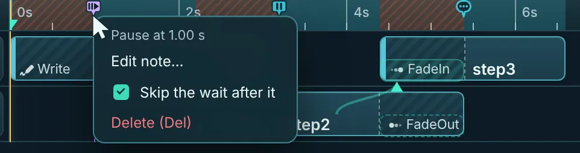
Where there is nothing to skip, the entry is greyed out and a line under it says why:
- An animation starts at this instant: there is no wait after it to skip. The pause stands where the next animation starts: at the end of a rest, or between two animations that touch.
- No animation follows this pause: the scene only ends after it. The rest after the last animation is kept, and it may hold the end of the scene’s sound.
- The exports leave this pause out: it is not where the scene rests. The pause is under an animation or past the end (above).
Moving the pause, dragging it or writing its note keeps the setting. If an edit leaves it with nothing to skip, it stays violet without its line, its tip says it skips nothing there and why, and its entry is still there to untick.
What the ruler shows
Point at a pause that skips its wait, or reach it with Tab, and its tip says how long the wait is and where the scene goes on. Its dashed line down the tracks is violet too.
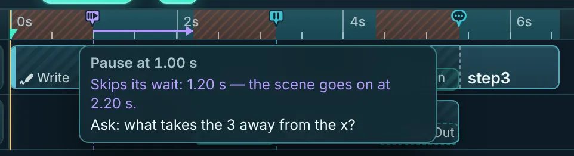
At every pause at once
View ▸ Skip the wait at every pause sets it on every pause that has a wait to skip, and leaves the others as they are: its notice counts them. View ▸ Keep the wait at every pause takes it off every pause. Both are in the ruler’s right-click menu too, wherever you open it, each is one undo step, and neither has a key. Both are greyed out while the project has no pause.
In the rehearsal and on the page
With Stop at pauses on, Play from a pause that skips its wait jumps over the rest: the playhead and the time leap to where the next animation starts, and the Preview plays from there, its sound too. When another pause stands in the same rest before that, the playhead goes to it and stays there.
The exported page does the same where it really stopped. Standing at such a pause, every way of going on (Play, Next, a key, a click on the scene) first jumps over the wait, the sound with it, then plays. Try it in the scene at the top of this page: after its first stop, Next starts the first transformation at once. On the bar, the notch of such a pause is violet and the wait it skips is dashed:
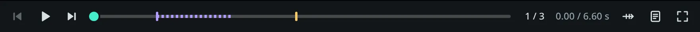
Played through its pauses (its Play through the pauses button, or data-pauses="off" when it is embedded), the page stops nowhere and skips nothing: the rest plays, as in the Preview without Stop at pauses. The wait is still part of the scene: a press on the timeline inside the dashes shows that instant.
Nothing else changes. The scene’s time and length are the same with the setting and without it, every video plays the rest, and the exported Python keeps its self.wait: only its # PAUSE line says that the page skips the wait (next section).
The marks in the exported Python
Export ▸ Python — ManimCE… and — ManimGL… write each mark as a comment at its instant in construct, for whoever goes on with the scene: a pause as # PAUSE n of N with its time and its note, a comment as # NOTE with its time and its words. This is the example’s ManimCE scene:
# 0 s – 1 s: step1 write
self.play(Write(VGroup(*step1_g[:])), run_time=1)
# PAUSE 1 of 2 (1.00 s), the exported page skips the 1.20 s wait after it: Ask: what takes the 3 away from the x?
# 1 s – 2.2 s
self.wait(1.2)
…
# PAUSE 2 of 2 (3.20 s): Work out 5 − 3 together before going on.
…
# NOTE (5.40 s): Make the 2 of the answer glow once it is in place.
# 5.4 s – 6.6 s
self.wait(1.2)- They are written with Comments (formulas, timing) unticked too: they are your words, not the editor’s.
- Each line of a comment’s text is a line of the Python comment.
- A mark in the middle of a wait splits the
self.wait(…)in two that add up to the same frames, so the video keeps its length. - A mark under an animation or past the end of the scene is left out, and the dialog lists it.
- A pause that skips its wait, the first one here, says so before its note, and the
self.waitafter it stays.
Manim itself does not stop at them: they are comments. The page of the next section is what stops.
Export ▸ HTML
Export ▸ HTML… writes the scene as a web page that is the animation: the editor’s own engine draws it as it plays, sharp at any size, rather than a video of it. It opens from disk with a double click: no server, no internet connection, nothing to install. It stops at each pause of the Slides mode until its reader goes on; a scene without the mode plays through.
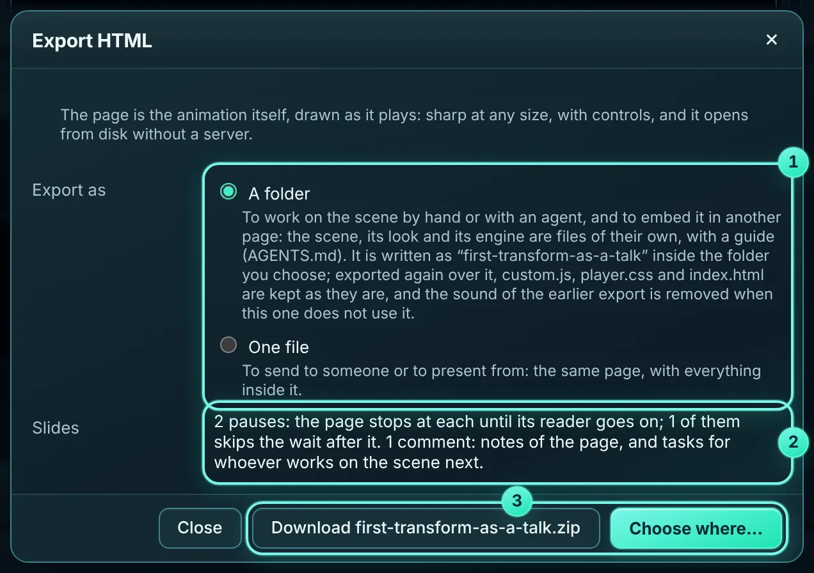
- Export as: a folder, to work on the scene and to embed it in another page, or one file, to send to someone or to present from: the same page with everything inside it, a single
.html. - Slides: how many pauses and comments the page carries, how many of the pauses skip their wait (1 of them skips the wait after it), and, in amber, each mark it leaves out because it stands under an animation or past the end.
- The buttons. In Chrome and Edge, Choose where… asks for a folder and writes the scene inside it, as a folder of the scene’s name; Download <scene>.zip downloads the same folder as a zip, which is the way in browsers that cannot write a folder. With One file the button is Download <scene>.html.
A project with recordings gets one more line, The scene’s sound: the whole sound of the scene, mixed as the Preview plays it, beside the page as audio.m4a (or inside it, for one file). It plays with the scene and stops at its pauses. The scene’s name is the project’s name in small letters and hyphens: First transform, as a talk is first-transform-as-a-talk.
Exported again over a folder written before, the scene keeps custom.js, player.css and index.html as they are: what you or an agent added to the scene is in them, and survives the scene going back to the editor. A notice names the files it left alone. The sound an earlier export wrote there is removed when the new one does not use it: the scene exported without its sound, or from a browser that writes the other kind of file. An audio.m4a or audio.wav that is not the file the app wrote may be yours: it stays, and the notice, in amber, says so.
Presenting with the page
Open index.html (or the single file) in a browser. The scene takes the window, with a bar under it.
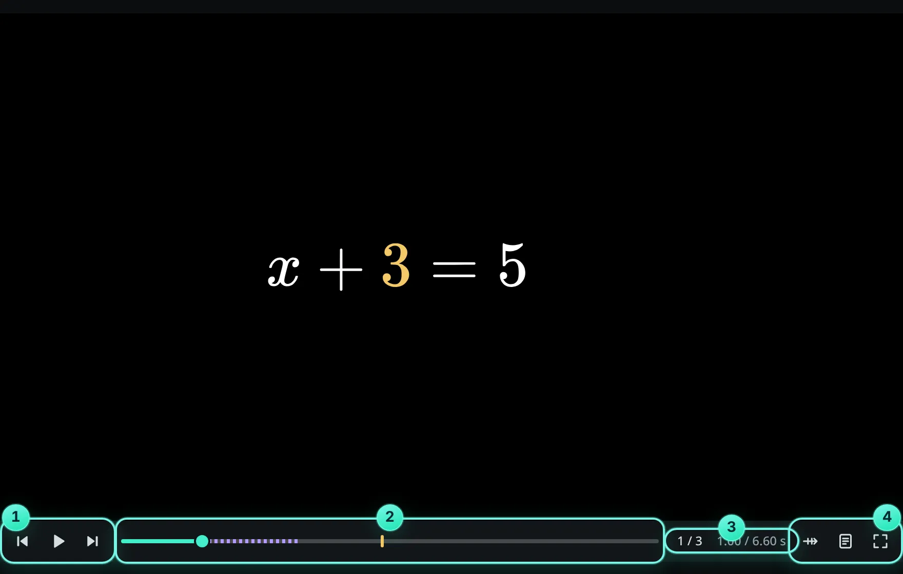
- Previous, Play and Next. Next plays to the next pause, or jumps there at once while the scene plays; Previous goes back to the pause before, or to the start. From a pause that skips its wait, Play and Next first jump over that wait.
- The timeline, with a notch at each pause, violet for a pause that skips its wait, the wait it skips dashed: a press there goes to that time, on a notch to the pause exactly, and a drag scrubs.
- The slide and the time. A scene with two pauses has three slides.
- Play through the pauses, the notes and full screen. A scene with sound also has a mute button.
A click on the scene plays or pauses it. The keys are the ones of a presentation program, so that a presenter’s remote works:
| Keys | What they do |
|---|---|
| → ↓ Space PageDown N Enter | Go on to the next pause, over the wait of a pause that skips it |
| ← ↑ PageUp P Backspace Shift+Space | Back to the pause before |
| Home, End | The start, the end |
| K | Play or pause |
| F | Full screen, and back |
| S | Show or hide the notes |
| B or . | Black the stage out, and back |
| M | Sound off and on, when the scene has sound |
The notes are for whoever presents: the note of the last pause and the comments of the slide you are on, under the slide’s number. The stage grows smaller to leave them room.
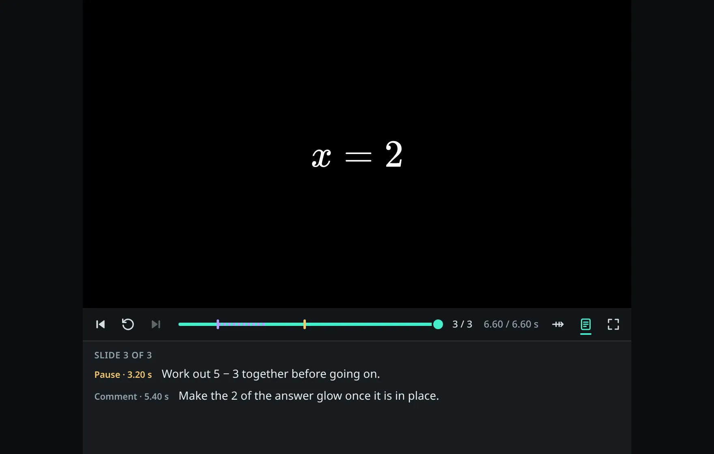
- In full screen the bar and the pointer hide after a moment of rest, and come back when the pointer moves. The notes then float over the stage.
- While the stage is black, the first key or click brings the scene back where it was and does nothing else.
- A presenter’s remote such as the Logitech R400, R700 or R800 sends PageDown, PageUp and .: next, back and black. Its start button sends F5, which reloads the page: press F for full screen instead.
- A browser plays sound only after a key or a click on the page: the first key you press is enough.
The address of the page takes the options of the next section: index.html?controls=minimal&autoplay shows only Play and the timeline and starts at once, and index.html?controls=none gives the stage the whole window.
Embedding the scene in a page of your own
Copy the folder next to your page and add its stylesheet, an element that names the scene and its scripts. The element takes the width of what holds it, and keeps the scene’s shape:
<link rel="stylesheet" href="first-transform-as-a-talk/player.css">
…
<div class="mfe-deck" data-scene="first-transform-as-a-talk"></div>
…
<script src="first-transform-as-a-talk/mfe-runtime.js"></script>
<script src="first-transform-as-a-talk/glyphs.js"></script>
<script src="first-transform-as-a-talk/scene.js"></script>
<script src="first-transform-as-a-talk/custom.js"></script> <!-- when the scene has code of its own -->The engine first, then the outlines and the scene: the engine mounts every .mfe-deck once the page has loaded. A page can hold several scenes, each with its own two files and one engine for all. The scene at the top of this page is embedded so, its controls following the site’s theme through data-theme. A site that takes no scripts of yours can show the scene’s own page in a frame, its options in the address:
<iframe src="first-transform-as-a-talk/index.html?controls=minimal" title="First transform, as a talk"
allow="fullscreen" style="width: 100%; aspect-ratio: 16 / 9; border: 0"></iframe>The folder’s embed-example.html is a page that does both, with what to copy marked. An embedded scene hears its keys only while the focus is inside it, so that the arrows and Space stay your page’s; a click on it gives it the focus. Its options are data- attributes of its element:
| Attribute | What it does |
|---|---|
data-controls | full (the default), minimal (Play and the timeline) or none (no bar, and no keys) |
data-notes="off" | No notes: neither their button nor the S key. The notes show the scene’s comments, which are tasks for whoever works on it, and the notes of its pauses: turn them off in a page for readers (minimal keeps the keys and the notes) |
data-autoplay, data-loop | Plays when it comes on screen (never for a reader who asked for less motion); starts again at the end |
data-start | The second it shows before it plays |
data-pauses="off" | Plays through the pauses, and skips no wait |
data-background="transparent" | No background of its own: your page shows behind the scene |
data-theme | light or dark controls; without it, the reader’s system decides |
data-speed | How fast it plays: 0.5, 2… |
data-keys | focus (the default), page (keys heard anywhere on the page) or none |
data-renderer="canvas" | Draws on a canvas instead of SVG, for a scene too heavy for the browser’s SVG |
Its look is player.css, which is yours to change. Every rule of it stays under .mfe-deck, so nothing in it reaches the rest of your page, and a rule of yours with the same classes, written after it, wins. The simplest change is a custom property, set from your own stylesheet:
<style>
.my-article .mfe-deck {
--mfe-accent: #ff8a3d; /* the played part */
--mfe-pause-mark: #ffd166; /* a pause's notch */
--mfe-bar-background: #1b1b2f; /* the bar */
--mfe-radius: 0; /* square buttons */
}
</style>The head of player.css lists every custom property and every class, which are the contract a page’s rules and scripts may rely on. The folder’s guide (AGENTS.md, «Changing the look») has more: how to give the controls your page’s font, what to do with a light page, and the CSS for controls that only appear under the pointer.
Handing the folder to a coding agent
The folder is written to be extended, by you or by a coding agent that has never seen the editor: Claude Code, Codex, or any other. Give it the folder and say what you want. What it finds there:
AGENTS.md, its guide, which opens with your comments as its tasks: each with its instant, what ended before it, what starts after it and what is on screen. The notes of the pauses follow, as context. Then the files, how to look at the scene and check it, the two ways to extend it, the stage and its coordinates, embedding, restyling and the pitfalls.CLAUDE.mdimports it for Claude Code;README.mdis one screen for a person.scene.js, the animation as data you can read: its head comment names the clips (step1,step2…), the glyphs of each formula by index, and every event of the timeline with its time and where it is in the data. Edited and reloaded, the page plays the edit.custom.js, for code of your own: it runs after the scene is loaded, and reaches the scene throughwindow.MFE(an animation of its own on the scene’s time, the place of a clip on the stage, the stage’s free layers). The stage is SVG: every clip is a group named bydata-clip, every glyph a path.node check.mjs, which says what is wrong with an edited scene without a browser, by line ofscene.js, andOKwhen it plays as written;node check.mjs <folder>checks a copy of the scene’s files in another folder.types/, the types of the page’s API and of the scene, made from the editor’s sources.
The guide of the scene at the top of this page begins with its comment, as a task:
## 1. What the author wants done next
The author left these comments at instants of the scene for whoever works on it next. Treat each as
a task. Times are seconds of the scene; names are the clips’ (section 4).
1. **5.40 s** (`slides.marks[2]`) — after `step2 → step3 (transform, 3 pairs)`, nothing after; on
screen: `step3`.
> Make the 2 of the answer glow once it is in place.and its scene.js with the timeline in words, each line with where it is in the data below it:
* The clips, by the names the page gives them (data-clip="…", deck.clip('…')):
* step1 clips[0] 0.00–3.20 s formulas[0] math “x + 3 = 5”
* step2 clips[1] 2.20–5.40 s formulas[1] math “x = 5 - 3”
* step3 clips[2] 4.40–6.60 s formulas[2] math “x = 2”
…
* What happens, in order (seconds of the scene; each line ends with where it is here):
* 0.00–1.00 s step1 write clips[0].intro
* 1.00 s PAUSE 1 (skips its wait to 2.20 s) · “Ask: what takes the 3 away from the x?” slides.marks[0]
* 2.20–3.20 s step1 fade_out clips[0].outro
* 2.20–3.20 s step2 fade_in clips[1].intro
* 2.20–3.20 s step1 → step2 (transform, 4 pairs) relations[0]
…
* 5.40 s NOTE · “Make the 2 of the answer glow once it is in place.” slides.marks[2]When you export the scene again from the editor, custom.js, player.css and index.html are kept (above): the agent’s code goes on working on the new scene.
Where to go next
- Exporting covers the other exports: Python, video, the frame as an image, and audio.
- The generated Python explains the scene file the marks go into.
- Keyboard shortcuts and Menus list every key and entry of the mode.